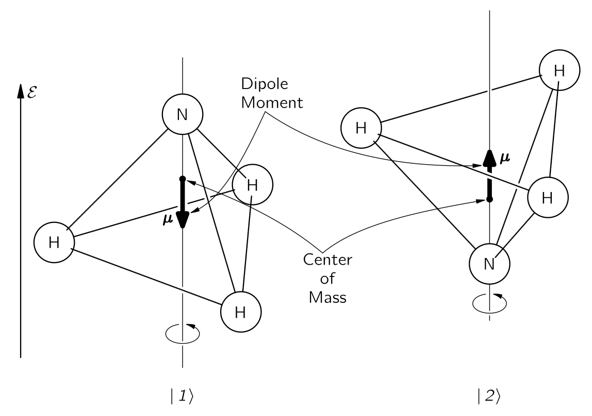

% %
%
\[ \DeclarePairedDelimiters{\set}{\{}{\}} \DeclareMathOperator*{\argmax}{argmax} \]
\(\mathrm{III}\).9 암모니아 메이저
\(\mathrm{III}\).9–1 암모니아 분자의 상태들
이 장에서는 실용적인 장치인 암모니아 메이저에 대한 양자역학의 적용에 대해 논의한다. 양자역학의 형식적인 진전을 중단하고 특정 문제를 해결하는 이유는, 이 특별한 문제의 많은 특징들이 양자역학 일반 이론에서 꽤 흔하다는 것을 알게 될 것이며, 이 하나의 문제를 자세히 고찰함으로써 많은 것을 배울 수 있을 것이다. 암모니아 메이저는 전자기파를 생성하는 장치이며, 그 작동은 지난 장에서 간략히 논의한 암모니아 분자의 특성을 기반으로 한다. 우선 지난장의 결과를 정리하자.
암모니아 분자는 여러 상태를 가지고 있지만, 우리는 이를 두 개의 상태 시스템으로 간주하며, 현재는 분자가 특정 회전이나 평행 이동 상태에 있을 때 어떤 일이 일어나는지에 대해서만 생각하고 있다. 두 상태에 대한 물리 모델은 다음과 같이 시각화될 수 있다. 암모니아 분자를 질소 원자를 통과하는 축을 중심으로 회전하고, 그림 22.1 에 표시된 바와 같이 수소 원자 평면에 수직이라고 간주한다면, 여전히 두 가지 가능한 조건이 존재한다—질소가 수소 원자 평면의 한쪽에 있거나 반대쪽에 있을 수 있다. 우리는 이 두 상태를 \(|1\rangle\) 와 \(|2\rangle\) 라고 한다. 그것들을 암모니아 분자의 거동을 분석하기 위한 기저 상태 집합으로 간주한다.

두 개의 기저 상태를 가진 시스템에서는, 어떤 상태든 하나의 기저 상태에 있는 특정 진폭 \(C_1\) 과 다른 기본 상태에 있는 진폭 \(C_2\) 가 존재한다. 그 상태벡터를 다음과 같이 쓸 수 있다.
\[ |\psi\rangle = |1\rangle C_1 + |2\rangle C_2. \]
여기서
\[ C_1 = \langle 1|\psi \rangle, \qquad \text{and} \qquad C_2=\langle 2|\psi \rangle. \]
이 두 진폭은 해밀토니안 방정식 식 21.81 에 따라 시간에 대해 변합니다. 암모니아 분자의 두 상태 대칭을 이용하여 \(H_{11}=H_{22}=E_0\), \(H_{12}=H_{21}=−A\) 라고 하고 해를 구하면 식 21.88
\[ C_1 (t) = \dfrac{a}{2} e^{-(i\hbar)(E_0-A)t} + \dfrac{b}{2} e^{-(i/\hbar) (E_0+A)t}, \tag{22.1}\] \[ C_2 (t) = \dfrac{a}{2} e^{-(i\hbar)(E_0-A)t} - \dfrac{b}{2} e^{-(i/\hbar) (E_0+A)t}. \tag{22.2}\]
이제 이러한 일반해들을 자세히 살펴보고자 한다. 분자를 처음에 \(b=0\) 인 \(|\psi_{II}\rangle\) 상태로 두었다고 가정하자. 그렇다면 \(t=0\) 에서 \(|1\rangle\) 상태일때와 \(|2\rangle\) 상태일 때의 진폭은 동일하며 전 기간 동안 그렇게 유지된다. 각각의 위상은 모두 시간에 따라 같이 변하며, 그 진동수는 \((E_0−A)/\hbar\) 이다. 마찬가지로, 분자를 \(a=0\) 인 \(|\psi_I\rangle\) 상태에 두면, 진폭 \(C_2 = -C_1\) 이며, 이 관계는 영원히 유지된다. 두 진폭은 이제 \((E_0+A)/\hbar\) 의 진동수로 시간에 따라 변한다. 이 두가지가 \(C_1\) 과 \(C_2\) 사이의 관계가 시간에 의존하지 않을 유일한 두 가지 상태 가능성이다.
우리는 두 진폭이 크기가 변하지 않고, 또한 같은 진동수로 변하는 위상을 갖는 두 개의 특수 해를 발견했다. 이것들은 \(\mathrm{III}\).7–1 정지 상태의 원자;정상 상태 에서 정의한 바와 같이 정상 상태이며, 이는 일정한 에너지의 상태이다. \(|\psi_{II}\rangle\) 상태의 에너지는 \(E_{II}=E_0-A\) 이며 \(|\psi_I\rangle\) 는 에너지 \(E_I=E_0+A\) 이다. 그것들은 존재하는 유일한 두 정상 상태이므로, 우리는 그 분자가 두 개의 에너지 준위를 가지고 있으며, 에너지 차이가 \(2A\) 임을 알 수 있다. (물론, 우리는 초기 가정에서 언급한 가정된 회전 및 진동 상태에 대한 두 개의 에너지 준위를 의미한다.)
만약 우리가 질소가 앞뒤로 뒤집히는 가능성을 허용하지 않았다면, 우리는 \(A=0\) 으로 취했을 것이며, 두 에너지 레벨은 에너지 \(E_0\) 에서 서로 겹쳐 놓이게 될 것이다. 실제 레벨은 이와 같이 되지 않으며, 평균 에너지는 \(E_0\) 이지만 \(\pm A\) 로 나누어져 두 상태의 에너지 사이에 \(2A\) 의 차이가 난다. \(A\) 는 실제로 매우 작기 때문에, 에너지 차이도 매우 작다.
원자 내부의 전자를 들뜨게 하기 위해서는 관련된 에너지가 상대적으로 매우 높기 때문에, 가시광선 혹은 자외선 영역의 광자가 필요하다. 분자의 진동을 자극하려면 적외선 광자를 사용한다. 회전을 들게 하는 것에 대해 이야기하자면, 상태들의 에너지 차이는 원적외선 영역의 광자에 해당한다. 하지만 에너지 차이 \(2A\) 는 그 중 어느 것보다 낮으며, 실제로 적외선보다 낮고 마이크로파 영역까지 충분히 들어간다. 실험적으로, \(10^{−4}\,\text{eV}\) 간격을 가진 한 쌍의 에너지 레벨이 존재한다는 것이 밝혀졌다—이는 \(24\,\text{GHz}\) 진동수에 해당한다. 분명히 이것은 \(2A=hf\) 이며, \(f=24\,\text{GHz}\) (\(\lambda = 1.25\,\text{cm}\))임을 의미한다. 따라서 여기에는 일반적인 의미에서 빛을 방출하지 않고 마이크로파를 방출하는 전이를 가진 분자가 있다.
다음 작업을 위해서는 이 두 가지 정상 상태를 조금 더 잘 설명해야 한다. \(C_1\) 과 \(C_2\) 의 합으로 진폭 \(C_{II}\) 를 구성한다고 하자.
\[ C_{II}=C_1+C_2=\langle 1|\phi \rangle + \langle 2|\phi\rangle. \tag{22.3}\]
이것은 무슨 뜻인가? 음, 이것은 원래 기본 상태들의 진폭이 동일한 새로운 상태 \(|II\rangle\) 에서 상태 \(|\phi\rangle\) 를 찾기 위한 진폭일 뿐이다. 즉, \(C_{II}=\langle II|\phi\rangle\) 라고 쓰면, 우리는 식 22.3 로부터 \(|\phi\rangle\) 라고 하면 모든 \(\phi\) 에 대해 참이기 때문에 다음과 같이 \(\phi\) 를 제거 할 수 있다.
\[ \langle II| = \langle 1| + \langle 2|. \]
이는
\[ |II\rangle =|1\rangle +|2\rangle \tag{22.4}\]
와 같은 의미이다. 상태 \(|II\rangle\) 이 상태 \(|1\rangle\) 에 있는 진폭은
\[ \langle 1 | II\rangle = \langle 1|1\rangle + \langle 1|2\rangle \]
인데, \(|1\rangle\) 와 \(|2\rangle\) 는 기저 상태이므로 위 식은 단순히 \(1\) 이다. \(|II\rangle\) 상태가 \(|2\rangle\) 상태에 있을 진폭 역시 \(1\) 이므로, 상태 \(|II\rangle\) 는 두 기저 상태 \(|1\rangle\) 와 \(|2\rangle\) 에 대해 동일한 진폭을 가진 상태이다.
여기서 약간 곤란한 상황임을 알아야 한다. 상태 \(|II\rangle\) 이 어떤 기저 상태에 있거나 다른 상태에 있을 전체 확률이 \(1\) 보다 크다. 하지만 이는 단순히 상태 벡터가 제대로 정규화(normalization) 되지 않았음을 의미한다. \(\langle II|II\rangle = 1\) 이어야 하며(이는 다른 모든 상태에 대해서도 성립한다), 일반적으로 성립하는 다음 관계식
\[ \langle \chi|\phi\rangle = \sum_i \langle \chi|i\rangle \langle i|\phi\rangle \]
에서 \(\phi\) 와 \(\chi\) 를 모두 상태 \(II\) 로 두고, 기본 상태들의 합을 취하면,
\[ \langle II|II\rangle = \langle II|1\rangle \langle 1|II\rangle + \langle II|2\rangle \langle 2|II\rangle. \]
\(C_{II}\) 에 대한 정의를 식 22.3 에서 아래와 같이 변경한다면, 위 식의 값이 \(1\) 이 될 것이다.
\[ C_{II}=\dfrac{1}{\sqrt{2}}[C_1+C_2]. \]
같은 방식으로 진폭을 구성할 수 있다.
\[ C_I=\dfrac{1}{\sqrt{2}}[C_1−C_2] \]
또는 \[ C_I=\dfrac{1}{\sqrt{2}}[\langle 1|\phi\rangle - \langle 2|\phi\rangle]. \tag{22.5}\]
이 진폭은 상태 \(|\phi\rangle\) 를 새로운 상태 \(|I\rangle\) 로 투영한 것으로, 그 상태는 서로 반대되는 진폭을 가지고 상태 \(|1\rangle\) 와 \(|2\rangle\) 에 속한다. 즉, 식 22.5
\[ \langle I| = \dfrac{1}{\sqrt{2}}[\langle 1|-\langle 2|] \]
혹은
\[ |I\rangle = \dfrac{1}{\sqrt{2}} [|1\rangle - |2\rangle] \tag{22.6}\]
과 같은 의미이다. 이로부터
\[ \langle 1|I\rangle =\dfrac{1}{\sqrt{2}}=− \langle 2|I\rangle. \]
지금까지 이 모든 작업을 수행한 이유는 상태 \(|I\rangle\) 와 \(|II\rangle\) 를 새로운 기저 상태 집합으로 볼 수 있으며, 이는 암모니아 분자의 정지 상태를 설명하는 데 특히 편리하기 때문이다. 기저 상태는 다음을 만족해야 한다.
\[ \langle i|j\rangle = δ_{ij}. \]
우리는 이미 이 문제를 해결하여
\[ \langle I|I\rangle = \langle II|II\rangle = 1 \]
이며, 식 22.4 와 식 22.6 을 이용하여 다음을 쉽게 보일 수 있다.
\[ \langle I|II\rangle = \langle II|I\rangle =0. \]
새로운 기본 상태 \(|I\rangle\) 와 \(|II\rangle\) 에 대한 진폭 \(C_I=\langle I|\phi\rangle\) 와 \(C_{II}=\langle II|\phi\rangle\) 는 또한 식 21.77 의 해밀토니안 방정식을 만족해야 한다. 실제로, 두 방정식 식 22.1 와 식 22.2 을 단순히 빼고 \(t\) 에 대해 미분하면,
\[ iℏ\dfrac{dC_I}{dt}=(E_0+A)C_I = E_IC_I. \tag{22.7}\]
그리고 식 22.1 와 식 22.2 을 더하고 \(t\) 에 대해 미분하면,
\[ iℏ\dfrac{dC_{II}}{dt} =(E_0−A)C_{II} = E_{II}C_{II}. \tag{22.8}\]
기저 상태로 \(|I\rangle\) 과 \(|II\rangle\) 사용하면 해밀토니안 행렬은 아래와 같이 단순한 형태를 가진다.
\[ H_{I,I} = E_I,\quad H_{I,II} = 0, \quad H_{II, I} =0, \quad H_{II, II} = E_{II}. \]
식 22.7 과 식 22.8 는 1‐상태 시스템 방정식에 대해 \(\mathrm{III}\).8-6 암모니아 분자 에서 우리가 가지고 있던 것과 똑같이 보인다. 그들은 단일 에너지에 해당하는 단순한 지수 시간 의존성을 가지고 있다. 시간이 흐름에 따라 각 상태에 있는 진폭은 독립적으로 작용한다.